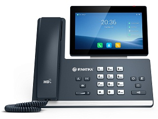

IPmatika IPM58
Цена носит информационный характер — актуальную стоимость и наличие уточняйте у менеджера.
IPmatika IPM58 — простой в использовании мультимедийный IP-телефон, который имеет расширенные функции профессионального уровня для передачи аудио и видео высокой четкости. Этот умный бизнес-телефон обеспечивает визуальную коммуникацию, значительно повышающую производительность сотрудников. Оснащенный операционной системой Android 9.0, IPmatika IPM58 представляет более лаконичный новый интерфейс, оптимизированный для различных бизнес-задач, имеет встроенный USB-порт для подключения USB-гарнитуры, USB-накопителя для записи разговоров и скриншотов или до 3 модулей расширения Yealink EXP50, что значительно повышает эффективность работы пользователя.
Для компаний с усиленными требованиями к безопасности
IPmatika IPM58 специально разработан для компаний с усиленными требованиями к безопасности (отсутствие поддержки беспроводных протоколов передачи данных Bluetooth и Wi-Fi). В модели IPM58 физически отсутствуют модули Bluetooth и Wi-Fi, кроме того, ПО на базе Android 9.0 не содержит функций подключения и настройки протоколов Bluetooth и Wi-Fi.
Улучшенный пользовательский интерфейс на базе Android 9.0
Оснащенный операционной системой Android 9.0, IPmatika IPM58 позволяет использовать большое количество сторонних приложений, делая рабочий процесс более логичным и удобным. Администраторы могут легко установить дополнительные приложения для Android, улучшая производительность и эффективность совместной работы. Обновленный пользовательский интерфейс IPmatika IPM58 стал более бизнес-ориентированным и простым в использовании.
Аудио и видео качества HD
IPmatika IPM58 использует последние версии голосовых технологий — Yealink Optimal HD, технологию шумоподавления Yealink Noise Proof, которые максимизируют акустические характеристики телефонной трубки, гарнитуры и громкой связи. С помощью съемной 5 МП HD-камеры CAM50 (поставляется опционально) пользователь может подключаться к видеоконференциям прямо со своего рабочего места.
Гарантия — 18 месяцев.
Характеристики
Функции телефона
- Yealink SDK (комплект разработки программного обеспечения)
- 16 SIP-аккаунтов
- Удержание, переадресация, режим ожидания, трансфер
- Быстрый набор, горячая линия, отключение микрофона, DND ("Не беспокоить")
- Групповое прослушивание, экстренные вызовы
- Повторный набор, возврат вызова, автоответ
- Прямой IP-вызов без SIP-прокси
- Выбор мелодии/загрузка/удаление
- Настройка времени: автоматически или вручную
- Правила набора
- Action URL/URI
- Поддержка RTCP-XR, VQ-RTCPXR
- Особенности управления домофоном:
- предварительный просмотр
- открытие одной кнопкой
- мониторинг
- USB-порт на задней панели для:
- подключения проводных гарнитур
- записи разговоров на USB-носитель
- подключения до трех модулей расширения EXP50 (необходим дополнительный блок питания при подключении более одного модуля расширения)
- 3-сторонняя видеоконференция
- 10-сторонняя аудиоконференция или смешанная конференция
Экран и индикаторы
- Цветной 7" сенсорный экран с разрешением 1024 х 600
- Регулируемый угол наклона экрана
- LED-индикатор питания и вызова
- Интуитивный пользовательский интерфейс с значками и программными клавишами
- Скринсейвер и обои
- Поддержка нескольких языков
- Caller ID с именем, номером и фотографией
Функциональные кнопки
- 27 экранных кнопок с возможностью программирования
- Клавиши регулировки громкости
- 7 функциональных клавиш: гарнитура, повторный набор номера, трансфер, удержание вызова, громкая связь, голосовая почта, вкл./откл. микрофона
Кодеки и настройки голоса
- Голос в формате HD, HAC
- Технология подавления фонового шума Acoustic Shield
- Широкополосные кодеки: G.722, Opus
- Кодеки: G.711 (A/u), G.729, G.729A, G.729B, G.729AB, G.726, G.723.1, iLBC
- DTMF: In-band, Out-of-band (RFC2833), SIP INFO
- Full-duplex (полнодуплексный) спикерфон громкой связи с AEC (подавление эха)
- VAD (обнаружение активности голоса)
- CNG (генератор комфортного шума)
- AEC (подавление эха)
- PLC (маркирование потери пакета с медиа-данными)
- AJB (адаптивный буфер для голосовых пакетов)
- AGC (автоматическая регулировка чувствительности микрофона)
- Smart Noise Filtering (Умная фильтрация шума)
Видео при установке камеры CAM50 (опционально)
- HD-видеовызов 720p@30 кадр/с
- Кодеки: H.264 High Profile, H.264, VP8
- Камера 5 МП со шторкой и световым индикатором
- Поле обзора по горизонтали: 62 ± 3°
- Поле обзора по вертикали: 47 ± 3°
- Поле обзора по диагонали: 75 ± 5°
Записные книги
- Локальная записная книга до 1000 контактов
- Черный список
- Удаленная записная книга XML, LDAP
- Интеллектуальный поиск
- Google-контакты
- Поиск по записным книгам, импорт/экспорт локальной записной книги
- История вызовов: набранные/принятые/пропущенные/переадресованные
Интеграция с IP-АТС
- Анонимный вызов, отклонение анонимных вызовов
- BLF
- BLA
- Hot-desking, экстренный вызов, интерком, paging, музыка на удержании
- MWI (индикация голосовой почты), запись разговора
- Голосовая почта, парковка вызова, захват вызова
Управление
- Android 9.0
- Настройка телефона: веб-интерфейс/экран телефона/Autoprovision
- FTP/TFTP/HTTP/HTTPS/PnP Autoprovision
- Поддержка Zero-sp-touch, TR069
- Блокировка телефона
- Сброс к настройкам по умолчанию, перезагрузка
- Логи: PCAP Trace, system log
- Установка/удаление приложений администратором
- AutoProvision по PIN-коду
- Поддержка Yealink Device Management Platform (YMDP/YMCS)
- Поддержка Unify Square Device Management Platform
Сетевые характеристики и безопасность
- IPv4 / IPv6
- SIPv1 (RFC2543), SIPv2 (RFC3261)
- NAT, STUN
- Резервирование подключения к АТС
- Способы вызова: Proxy и peer-to-peer (по IP-адресу)
- Получение IP: статический/DHCP
- HTTP/HTTPS-сервер
- Синхронизация времени и даты через SNTP
- UDP/TCP/DNS-SRV (RFC3263)
- QoS: 802.1p/Q tagging (VLAN), Layer 3 ToS DSCP
- Управление HTTPS-сертификатами
- AES-шифрование конфигурационных файлов
- Поддержка стандартов шифрования и идентификации (MD5 и MD5-sess)
- Поддержка IEEE802.1X
- Поддержка GARP (Generic Attribute Registration Protocol)
Физические характеристики
- Крепление к стене (опционально)
- 2 х RJ45 Ethernet-порта 10/100/1000 Мбит/с
- PoE (IEEE 802.3af), Class 3
- Разъем для замка Kensington
- 1 x USB-порт на верхней части экрана для CAM50
- 1 x USB-порт на задней панели
- 1 х RJ9 для подключения трубки
- 1 х RJ9 для подключения гарнитуры
- Блок питания: вход 100-240 В AC, выход 5 В, 2 А
- Потребление через блок питания: 2,5-7,5 Вт
- Потребление через PoE: 3,3-9 Вт
- Размеры (Ш x Г x В x Т): 259,4 x 220 x 239 x 42,6 мм
- Рабочая влажность: 10~95%
- Рабочая температура: 0~40 ˚C